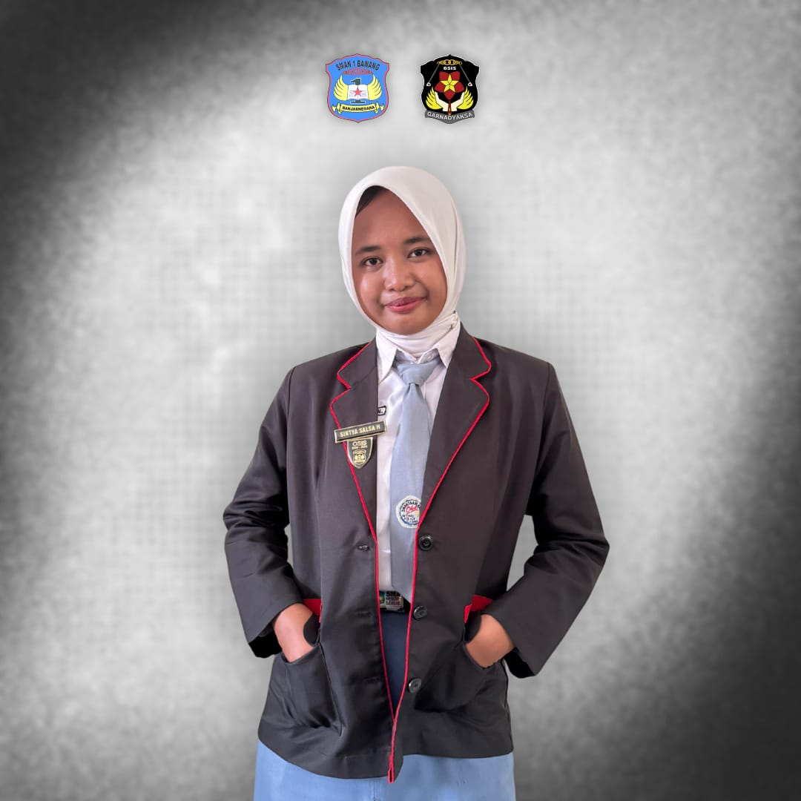
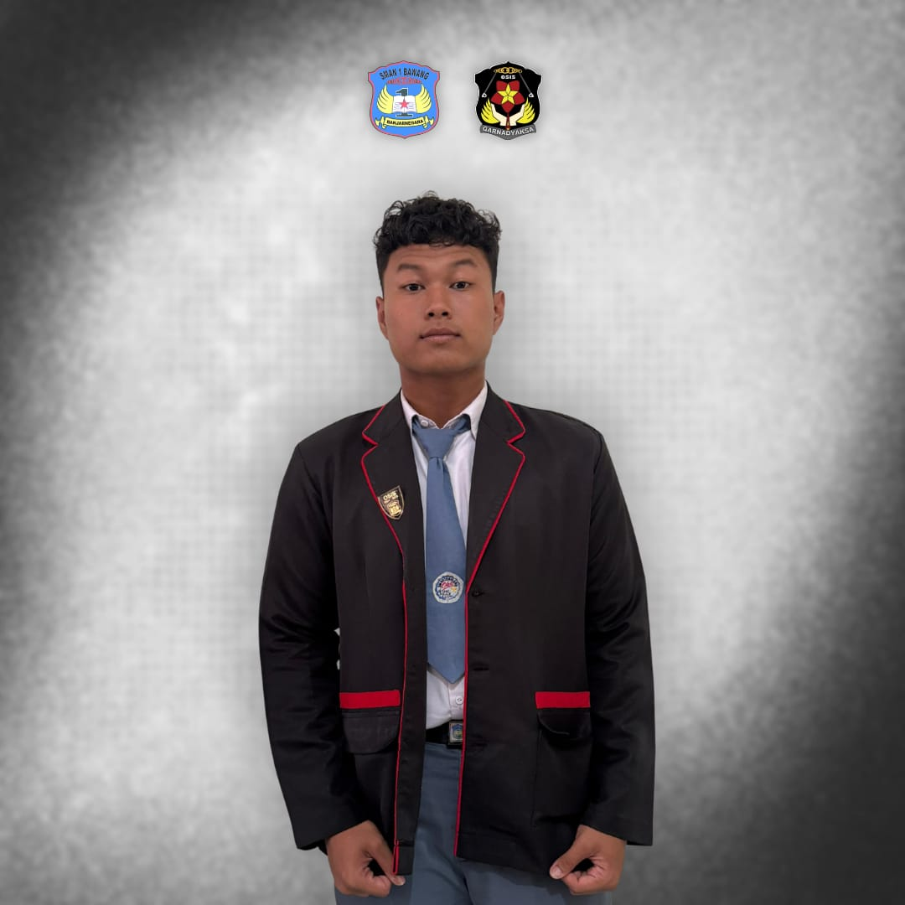
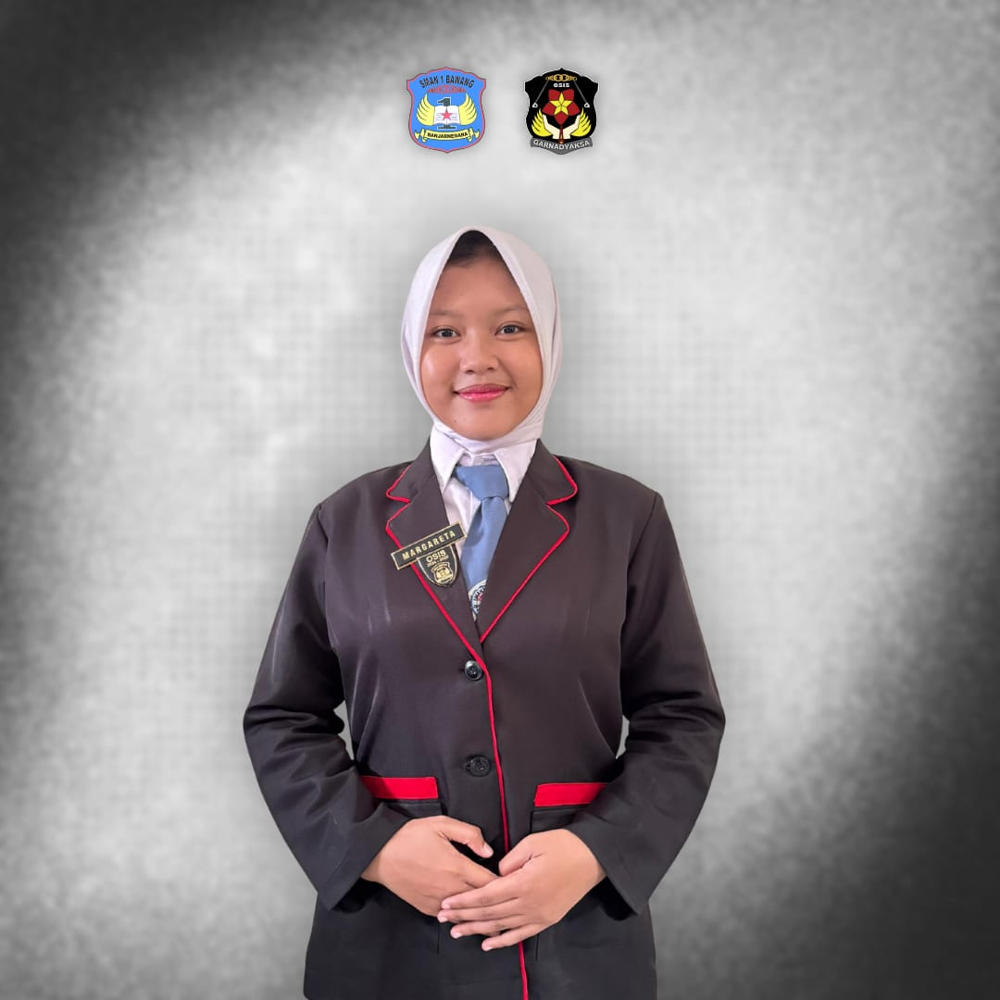
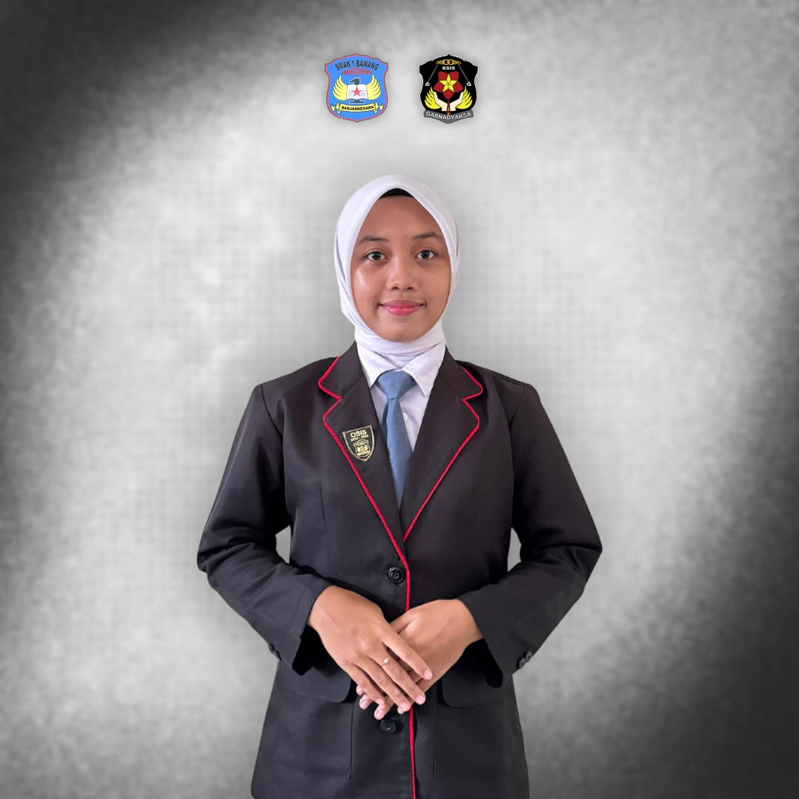
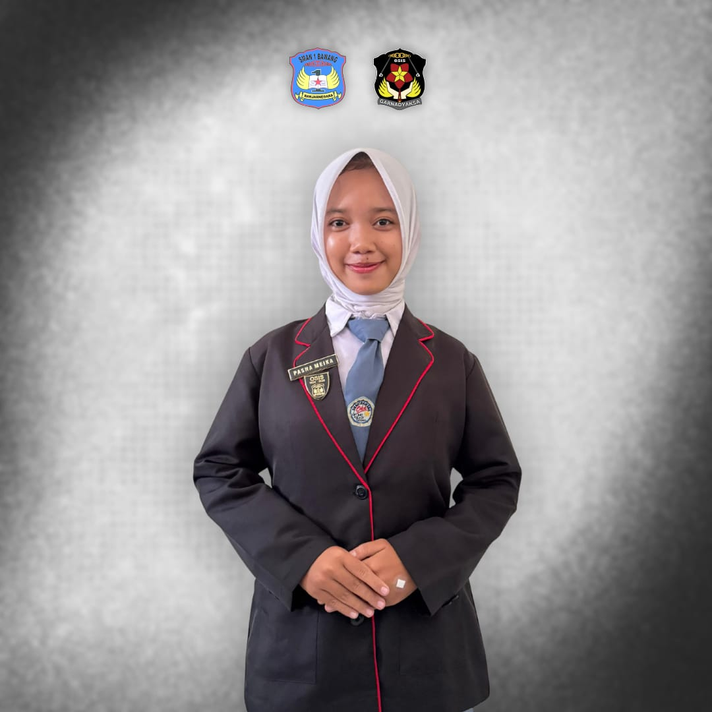
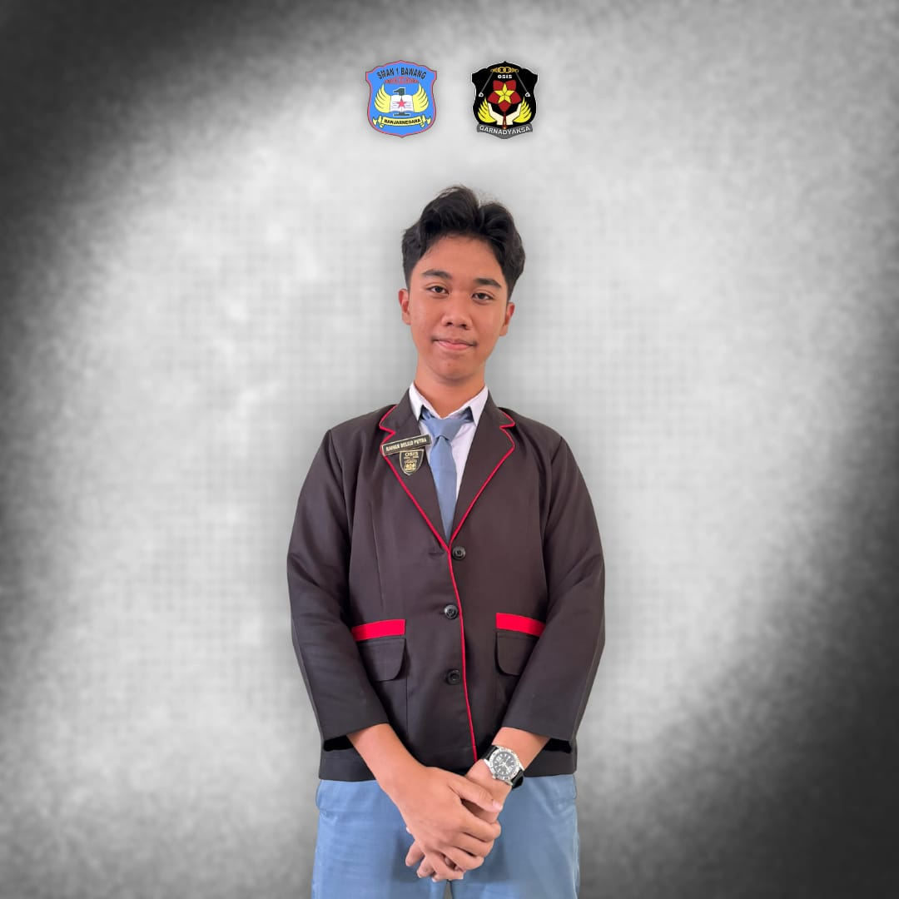

GARNADYAKSA






Seksi bidang kelima berfokus kepada kehidupan berorganisasi, politik, dan kepemimpinan. Proker yang dilaksanakan seksi bidang 5 bertujuan untuk melatih kepemimpinan, menanamkan kedisiplinan, dan kepekaan seperti LDK, Hari Akrab, Recuitment OSIS.